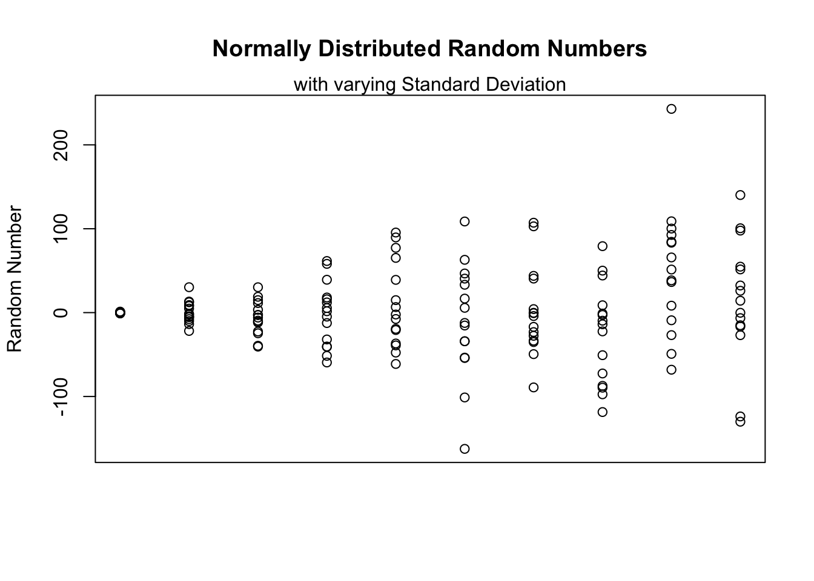

6.1 *apply-Family
In the previous sections we already introduced some vectorized functions without explicitly metioning their rationale and that they are vectorized. The following functions all belong to the so called *apply-Family. Vectorization in R requires a thorough understanding of the available data structures, as the following functions iterate (automatically) over different slices of data strucutes and perform (loop-wise) repetitions on the data slices from vectors, matrices, arrays, lists and dataframes. More specifically, the family consists of apply(), lapply(), sapply(), vapply(), tapply(), mapply(), rapply(), and eapply(). The following snippet gives a very short overview over the functions we are going to discuss in more detail. All of these functions are provided by the R base system and are thus located in the library base.
# The *apply-Family of Functions in the Library base
base::apply Apply Functions Over Array Margins
base::lapply Apply a Function over a List or Vector
base::sapply Simplified Version of lapply
base::vapply Safer Version of sapply
base::tapply Apply a Function Over a Ragged Array
base::mapply Apply a Function to Multiple List or Vector Arguments
base::rapply Recursively Apply a Function to a List
base::eapply Apply a Function Over Values in an Environmentapply
We already introduced apply and used it to apply a function to the rows or columns of a matrix, in the same fashion as functions like rowMeans or colMeans calculate a specific values for either a row or a column of a matrix. Generally speaking apply operates on (two dimensional) arrays, a.k.a. matrices. To get started we create a sample data set consisting of a matrix with 20 cells partitioned into five rows and four columns.
#R> [,1] [,2] [,3] [,4]
#R> [1,] 1 6 21 26
#R> [2,] 2 7 22 27
#R> [3,] 3 8 23 28
#R> [4,] 4 9 24 29
#R> [5,] 5 10 25 30To mimic the functionality of rowSums, we now can use the apply function to find the sum over all elements of each row as follows.
#R> [1] 54 58 62 66 70Notice that the funciton call to apply takes three arguments, where X is the data, MARGIN corresponds eiter to the rows as they are the first dimension of the data or to the columns, which correspond to the second dimension. FUN is the funciton that should be applied on the specified margin of the data. Note that the function in the snippet below is passed without parantheses (sum instead of sum()).
Remember that in R everything is a vector. Therefore, a matrix can be seen as a collection of line vectors when you cross the matrix from top to bottom (along MARGIN=1), or as a list of column vectors, spanning the matrix left to right (along MARGIN=2). The code in the above R chunk therefore translates directo to the instruction to: “apply the function sum to the matrix mat along the rows”. Ursuprisingly this leads to a vector containing the sums of the values of each row. Mathematically speaking we would expect a column vector here, while R outputs a line vector. As R does not differentiate here while outputting these on the console this makes no difference for this case. The following picture illustrates the process.
lapply
While matrices are an important and often used data structure they are not the only one. Quite often data comes as list and it may be a reasonable purpose to apply a function to every (sub-) element of a given list. As lists have no dimensions (see dim), the application of apply fails. Thefeore if you want to apply a specific function to every element of a list you have to use a list compatible version of apply, the lapply-function. The syntax is quite comparable to our usual apply, which can be seen when executing ?lapply.
Using our toy example with the previously introduced matrix, we construct a list by spliting mat by row. Applying the function sum to this list should now result in the same values as the previous application of apply on mat.
#R> $`1`
#R> [1] 1 6 21 26
#R>
#R> $`2`
#R> [1] 2 7 22 27
#R>
#R> $`3`
#R> [1] 3 8 23 28
#R>
#R> $`4`
#R> [1] 4 9 24 29
#R>
#R> $`5`
#R> [1] 5 10 25 30Due to the flexibility and ubiquitousness of lists, lapply can be widely used and e.g. also works on dataframes in addition to lists. Additionally it is compatible with vectors, where the second most important part about lapplycomes into place. Regardless if the data input X is a list, a dataframe or a vector, the returned data is always a list, which can be seen in the code below.
#R> $`1`
#R> [1] 54
#R>
#R> $`2`
#R> [1] 58
#R>
#R> $`3`
#R> [1] 62
#R>
#R> $`4`
#R> [1] 66
#R>
#R> $`5`
#R> [1] 70The following image shows the proces and illustrates how lapply works. As seen above the results are identical to the ones delivered by apply and the returned data structure is (as expected) a list.
sapply
The function sapply takes the same inputs and behaves in the exact same mannor as lapply, but tries to simplify the result so that it returns an appropriate data structure instead of always returning a list. Applied to our example from above sapply returns a numeric vector.
#R> 1 2 3 4 5
#R> 54 58 62 66 70sapply can be fored to behave exactly like lapply and also return a list by setting the argument simplify to FALSE.
res1 <- lapply(X=lst, FUN=sum)
res2 <- sapply(X=lst, FUN=sum, simplify = FALSE)
identical(res1, res2)#R> [1] TRUE#R> [1] "list"The simplification performed by sapply can also be applied manually. R offers the commands unlist or simplify2array, that perform similar simplification operations. The code below shows that results obtained by lapply are identical to the ones generated by sapply, after passing them to the function simplify2array.
#R> [1] TRUEWhile the manual simplification is possible, it should be strictly avoided. Using the built in capabilities of the functions makes the code more readable and may be more robust. It may cover additional cases that may not be covered when own functions or manual processes are used and therefore does not fail surprisingly.
vapply
vapply is similar to sapply and therefore somehow identical to lapply, but it requires to specify what type of data is expected as return value. Therefore vapply supports the additional argument FUN.VALUE, that allows to specify the expected return value. For the example used above we expect l/s/vapply to return a single numeric value for each list value, therefore FUN.VALUE = numeric(1).
#R> 1 2 3 4 5
#R> 54 58 62 66 70If the value specified by FUN.VALUE and the actual value returned by vapply do not match an error is returned.
#R> Error in vapply(X = lst, FUN = sum, FUN.VALUE = character(1)): values must be type 'character',
#R> but FUN(X[[1]]) result is type 'integer'#R> Error in vapply(X = lst, FUN = sum, FUN.VALUE = numeric(2)): values must be length 2,
#R> but FUN(X[[1]]) result is length 1Deciding which of these three functions lapply, sapply or vapply to use is obviously highly dependent on the context. While lapply always provides consistent results, the usage of sapply often helps to avoid annoiying transformations. When the input suffers from some inconsistencies vapply is the way to go, as it easily allows for checking special data types or even more complex data structures.
tapply
While every considered *apply-function up to now only supports one data input, tapply supports two of them, where the additional argument resembles an INDEX or grouping variable. tapply splits the provided data by the grouping values and applies the specified function to these created groups. The values for INDEX can be constructed based on factor levels, which means the provided values need to be a factor or must work when (automatically) coerced to a factor.
The following code transforms our sample data mat from the other examples to a data frame with three columns. The first columns conatins the actual values that we previously found within mat, the second column indicates the column index where a specific value was placed in mat and the thrid coolumn inicates the row index, where the value was located.
df <- data.frame(value=as.vector(mat), # Transform example mat into a data
row=rep(1:5, times=4), # frame that contains row and column
col=rep(1:5, each=4)) # indices in addition to the value.
head(df, n=3) # First 3 rows of the data frame#R> value row col
#R> 1 1 1 1
#R> 2 2 2 1
#R> 3 3 3 1#R> value row col
#R> 18 28 3 5
#R> 19 29 4 5
#R> 20 30 5 5The value in the top left corner (first row and first column) of mat is 1. Corresponding column indices are therefore col=1 and row=1. This tupel forms the first row of the created dataframe df. All other values from mat are handled in the same way. As mat is a 5 by 4 matrix, we get a dataframe with 20 rows.
We can now use tapply, the values from within mat and one of the column or row indices as grouping INDEX to calculate the sum of all values that belong to a specified group. Previously we calculated the sum of all values from a specified row. To obtain these exact same results, we can use the following function call.
#R> 1 2 3 4 5
#R> 54 58 62 66 70mapply
mapply stands for ‘multivariate’ apply. Its purpose is to be able to vectorize arguments to a function that is not usually accepting vectors as arguments. mapply applies a function to multiple Input arguments. The Inputs can either be lists or vectors. For a small example we define the following three vectors.
The following example generates \(n = 15\) (n) normally distributed random numbers with mean \(\mu = 0\) (m) and varying standard deviation \(\sigma\) (s).While the arguments for n are for all iterations equal to 15 and for m equal to 0 the values for s differ for each group of 15 numbers.
#R> NULL#R> [,1] [,2] [,3] [,4] [,5] [,6] [,7] [,8]
#R> [1,] -0.3197 -1.3505 -39.5232 -40.4332 -2.2562 -15.3775 -33.4822 8.7811
#R> [2,] 0.6714 4.8064 -24.6356 -59.4359 -47.6597 16.7118 107.1783 -9.6354
#R> [3,] -0.8737 -2.3748 18.8879 61.5044 -39.0888 108.6574 43.8071 79.2238
#R> [4,] 0.4372 -4.4322 -5.9077 58.1222 77.2545 33.2104 -27.6363 44.2322
#R> [5,] -0.0837 -10.1182 -40.5401 39.1807 89.6296 -162.4549 -89.1815 -1.1865
#R> [6,] -0.9776 12.3341 -22.5402 -51.5201 -36.8089 46.6530 -0.6849 -22.3735
#R> [7,] 0.1972 9.0089 14.8953 18.0268 14.8789 -101.1431 -16.9997 -2.7931
#R> [8,] -0.3204 -5.3583 -2.7345 -4.7797 95.4754 -34.1848 102.8748 -97.3877
#R> [9,] -0.1080 -5.3385 -2.8679 -12.4431 -19.3939 -54.0886 40.5622 -118.5427
#R> [10,] -0.3231 30.2885 11.4056 15.8892 -7.6271 40.5288 -49.4943 -72.5640
#R> [11,] 0.7047 13.1733 -9.5396 5.4634 -20.7525 -34.0843 -23.2182 -13.9135
#R> [12,] -0.4510 -21.8347 30.2582 -40.7978 65.2406 -12.3291 -0.2253 -89.4798
#R> [13,] -0.1394 -7.7416 3.3178 12.1550 39.0508 62.9464 -35.0932 50.0533
#R> [14,] -0.3987 -13.7062 -11.7581 1.6372 -61.2028 -53.6670 4.1789 -87.3442
#R> [15,] 1.1819 7.8985 -10.9405 -32.0110 6.5984 5.7072 -4.0933 -50.7509
#R> [,9] [,10]
#R> [1,] -26.8273 100.5772
#R> [2,] 108.8673 -16.6370
#R> [3,] 51.3577 140.1667
#R> [4,] 38.4638 -26.8911
#R> [5,] -49.1832 14.1799
#R> [6,] 242.8926 54.7768
#R> [7,] -9.1407 26.0456
#R> [8,] -68.0724 51.5007
#R> [9,] 83.3629 -15.0771
#R> [10,] 84.3996 -130.0417
#R> [11,] 65.7816 -6.5586
#R> [12,] 100.2040 -0.2008
#R> [13,] 92.6045 -123.7849
#R> [14,] 36.4904 32.3467
#R> [15,] 8.2663 97.7759The outcome is illustated using the following plot.
plot(NA, ylim = range(y), xlim=c(1,10),
ylab = "Random Number",
xaxt = 'n', xlab= "",
main = "Normally Distributed Random Numbers")
mtext("with varying Standard Deviation")
z <- sapply(1:10,
function(x,y){points(x = rep(x,length(y[,x])),
y = y[,x])},
y = y)
mapplycan be used to behave like nested for loops as the iterators can simply be anticipated and all iterator combinatinos can be generated in advance, e.g. with expand.grid. The following code shows how to iterate over all cells of a $5 10 $ matrix using mapply.
nrow <- 5
ncol <- 10
m <- matrix(1:(nrow*ncol), nrow = nrow, ncol = ncol)
ic <- expand.grid(1:nrow, 1:ncol)
afun <- function(r,c,m){m[r,c]^2}
mapply(afun, r = ic[,1], c = ic[,2], MoreArgs = list(m))#R> [1] 1 4 9 16 25 36 49 64 81 100 121 144 169 196 225
#R> [16] 256 289 324 361 400 441 484 529 576 625 676 729 784 841 900
#R> [31] 961 1024 1089 1156 1225 1296 1369 1444 1521 1600 1681 1764 1849 1936 2025
#R> [46] 2116 2209 2304 2401 2500